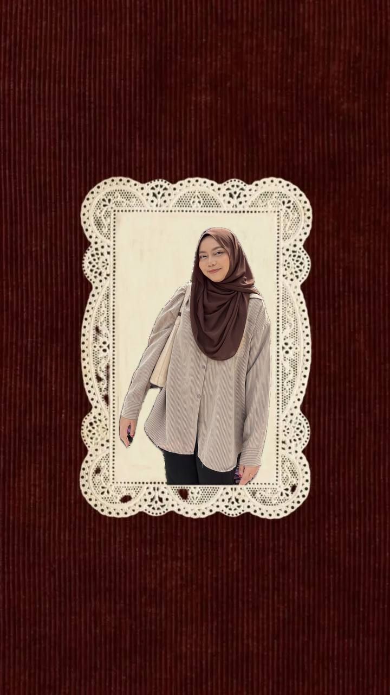

ABOUT ME
I am a Software Development student who enjoys learning about technology, web design, and coding. This page shares a little bit about myself, my study journey, the challenges I face, and what I hope to achieve in the future.

STUDY JOURNEY
I am currently pursuing a Bachelor of Computer Science (Software Development) with Honours at Universiti Sultan Zainal Abidin (UniSZA). Throughout my studies, I have learned various subjects related to programming, database, web development, system design, and software development.
Bachelor of Computer Science (Software Development) with Honours
Universiti Sultan Zainal Abidin (UniSZA)
3.72
Dean’s List for several semesters
My name is Nurul Atiqah Binti Noriza. I am interested in software development, web design, and creative digital projects.
I am currently studying Computer Science at UniSZA with a focus on Software Development. I have learned programming, database management, web development, and data analytic.
One challenge I face is understanding new programming concepts and solving coding errors. These challenges help me become more patient and confident.
In the future, I hope to become a creative software developer and build useful systems that can help people.